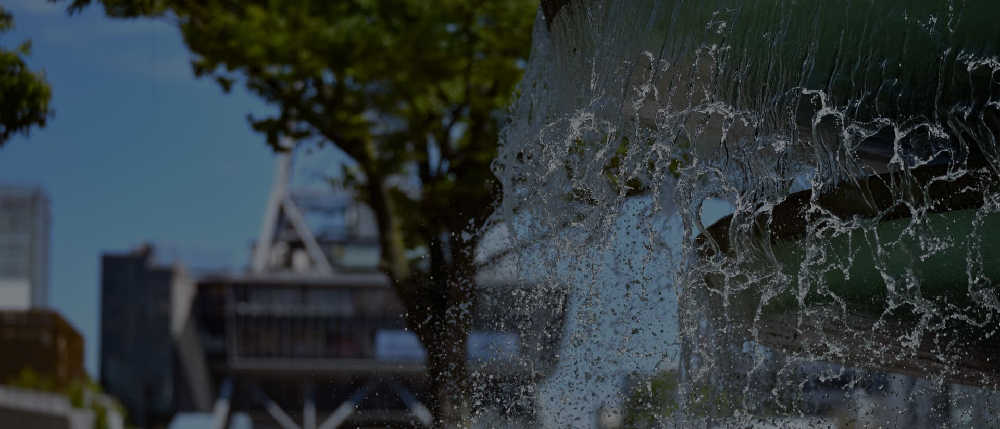
レイヤード ヒサヤオオドオリパーク／徒歩8分（約610m）
さらなる賑わいが
期待される羨望の街で、
日常に輝きを灯す。
躍動を身近に
感じながらも一線を画す。
都心に息づく静域へ。
橦木町一丁目は、
かつての「名古屋城東御門」に近く、
現在も三の丸の杜の豊かな緑が身近なエリア。
装飾にこだわった近代建築や伝統的建造物などが多く残されており、
料亭や資料館、美術館として利用されている。
また、南西側には都心のオアシス
「Hisaya-odori Park」が広がり、
公園内施設や周辺の商業施設が日常使いに。
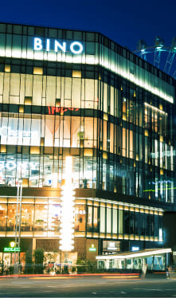
image
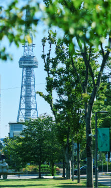
レイヤード ヒサヤオオドオリパーク
徒歩8分（約610m）
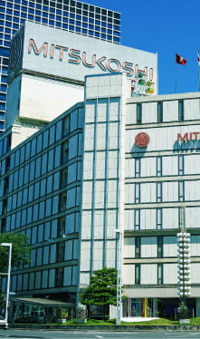
image
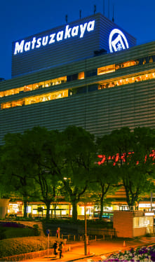
image
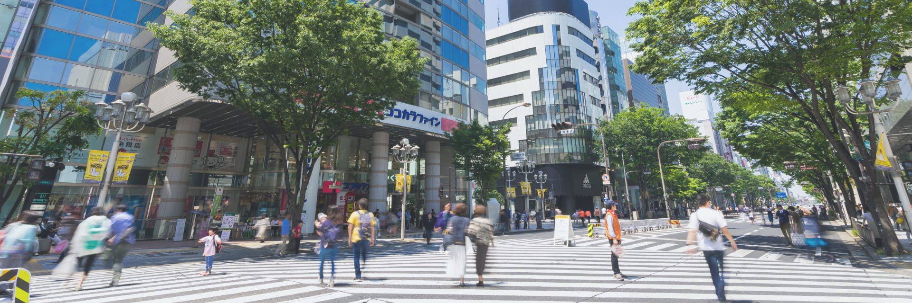
周辺の街並み
SAKAE
日々の暮らしに寄り添う、利便性に優れた住環境。
松坂屋、三越、パルコをはじめとした
ショッピング施設や100店舗超のショップが集う地下街・セントラルパーク、
さまざまなイベントやマルシェも開催されるオアシス21など、
都心で紡ぐ毎日に輝きを灯す商業施設が徒歩圏内に揃っています。
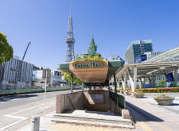
image
Central Park
徒歩13分（約1,020m）
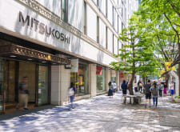
image
名古屋栄三越
徒歩22分（約1,710m）
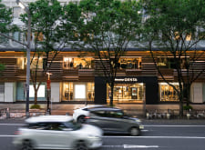
image
松坂屋名古屋店
徒歩25分（約1,990m）
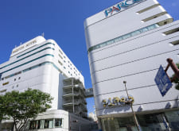
image
名古屋PARCO
徒歩29分（約2,280m）
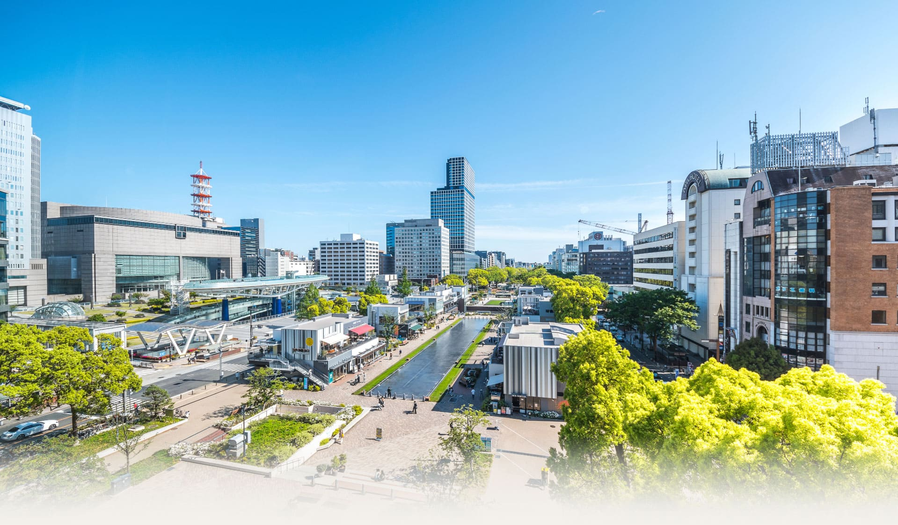
周辺の街並み
華やぎに寄り添い、便利さを実感する
栄エリア約1km圏
image
image
image
image
image
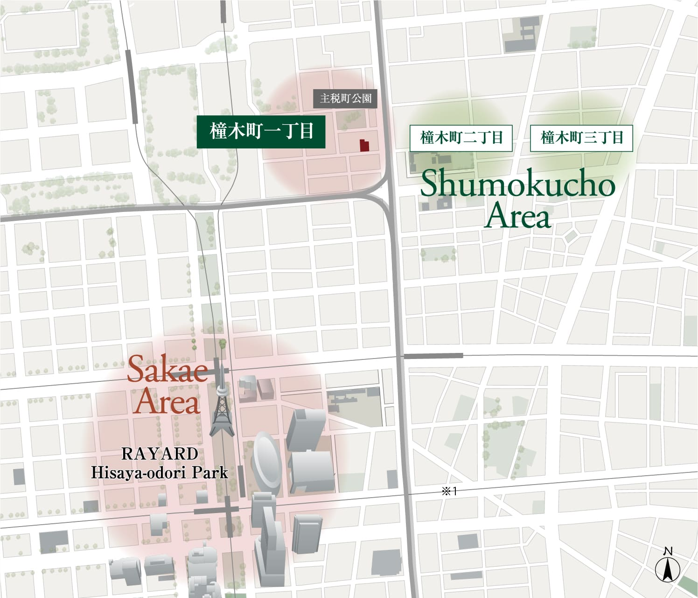
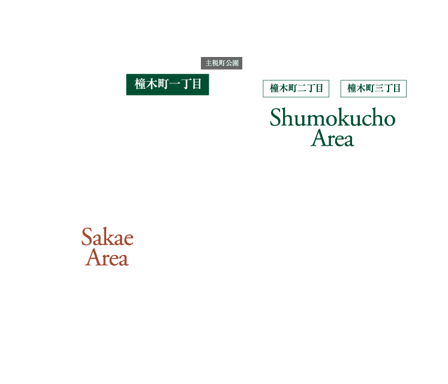
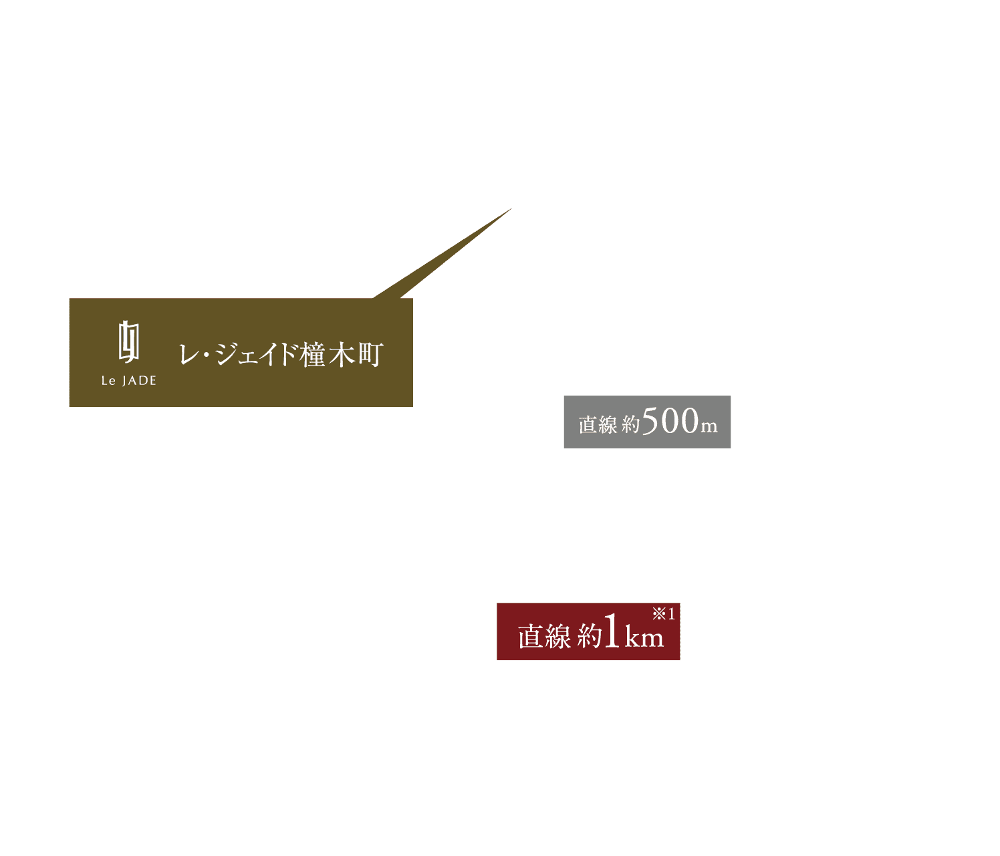
※栄エリア直線距離約1km圏内の表示は建設地からオアシス21の敷地までを計測したものです。
エリア概念図
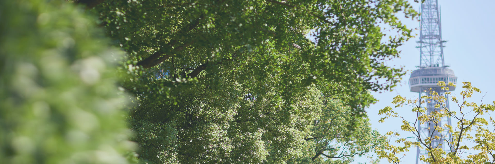
レイヤード ヒサヤオオドオリパーク／徒歩8分（約610m）
PARK
先端を享受する、
自然と調和する新たな暮らしの拠点。
緑豊かな都市公園「レイヤード ヒサヤオオドオリパーク」と共に、
ショッピング・グルメ・カルチャーが融合した、先端のライフスタイルを実現。
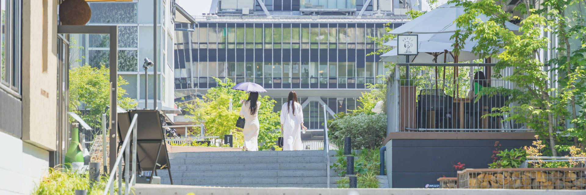
image
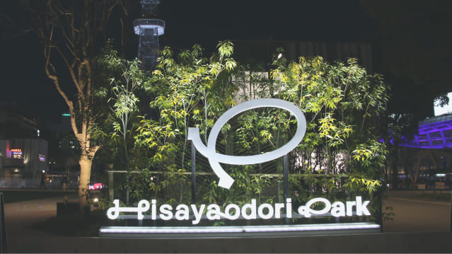
image
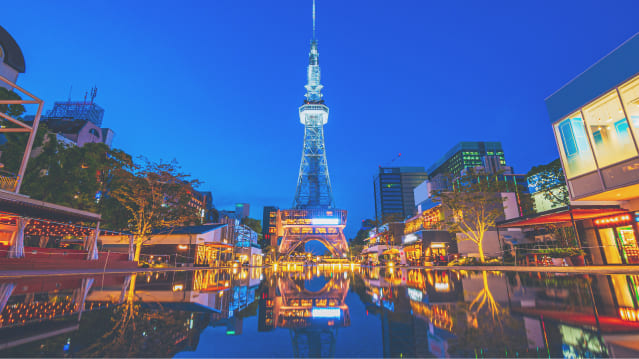
image
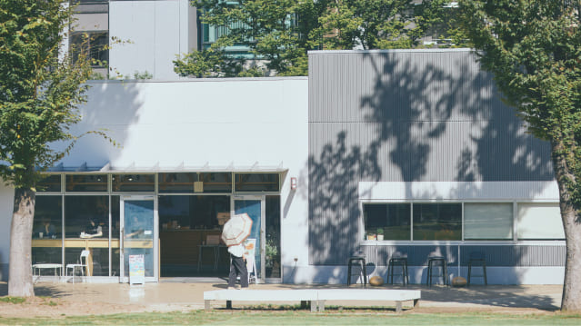
image
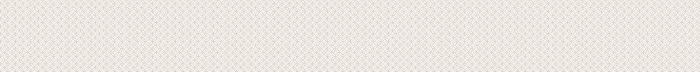
ACCESS
名古屋市内の主要都市を縦横無尽にリンクする、
全方位型のアクセス・ポテンシャル。
新幹線停車駅「名古屋」直結で「丸の内」駅・「久屋大通」を結ぶ地下鉄桜通線の沿線となるポジション。
「久屋大通」駅から一大繁華街「栄」駅や、ターミナル「金山」駅へも直結。
image
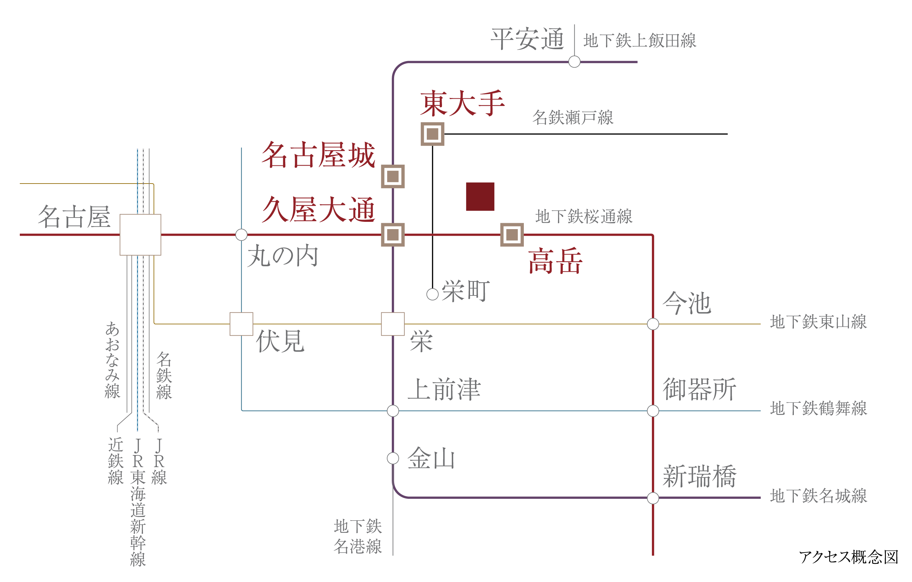
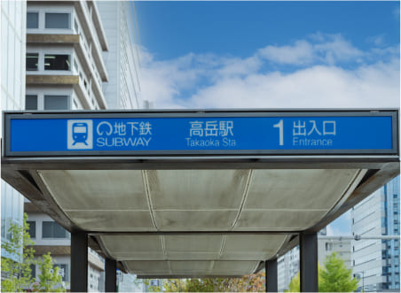
image
地下鉄桜通線
「髙岳」駅
徒歩9分
（約714m）
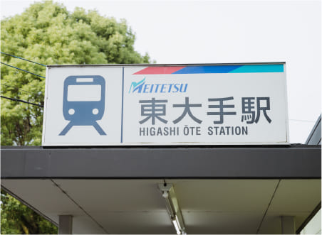
image
名鉄瀬戸線
「東大手」駅
徒歩10分
（約784m）
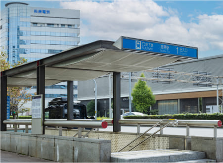
image
地下鉄名城線・桜通線
「久屋大通」駅
徒歩13分
（約1,018m）
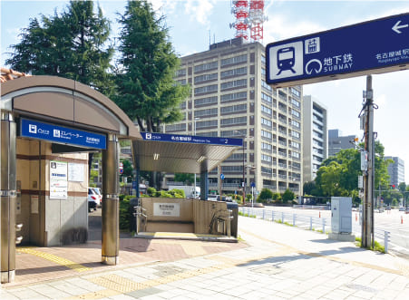
image
地下鉄名城線
「名古屋城」駅
徒歩12分
（2番出入口・約953m）
地下鉄桜通線
「髙岳」駅より
「久屋大通」駅
約1分
地下鉄桜通線
「髙岳」駅より
「丸の内」駅
約3分
地下鉄名城線
「久屋大通」駅より
「栄」駅
約2分
地下鉄桜通線
「髙岳」駅より
「名古屋」駅
約6分
カーアクセスも軽快に。
周辺に位置するインターチェンジで移動も自由自在。
主要な市内各所や郊外へも
思いのままにアクセスが可能です。
周辺に位置するインターチェンジが整った高速ネットワークを利用して、
ビジネスに、週末のレジャーに、スマートな移動を実現するポジションです。
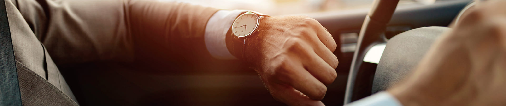
image
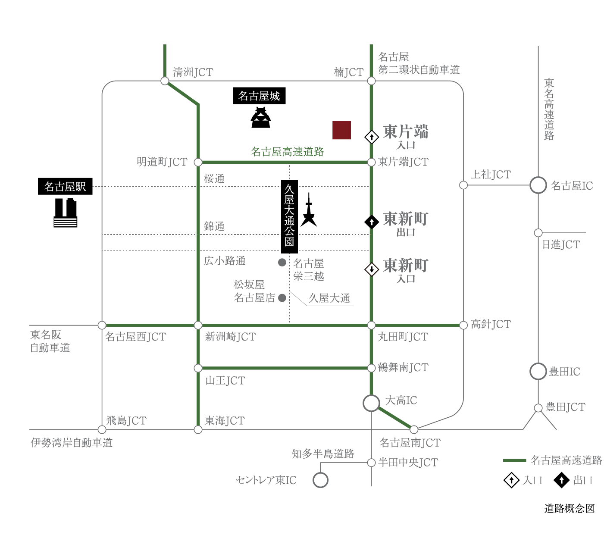
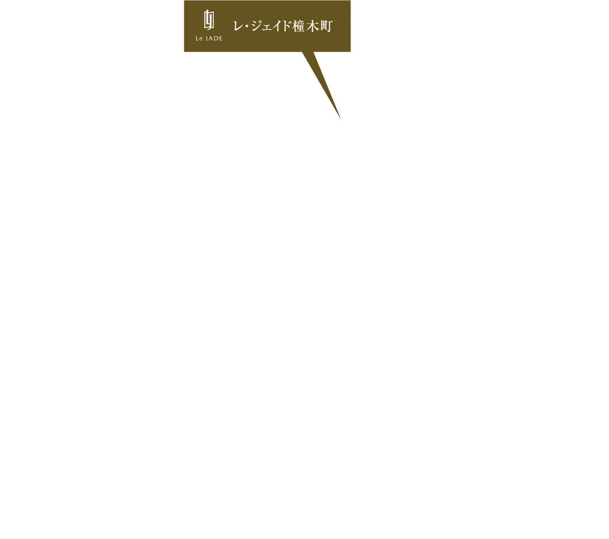
名古屋高速都心環状線
「東片端」IC
入口
車4分
（約1.0km）
名古屋高速都心環状線
「東新町」IC
入口
車12分
（約2.0km）
 TEL
TEL
 資料請求
資料請求
 来場予約
来場予約
 案内図
案内図